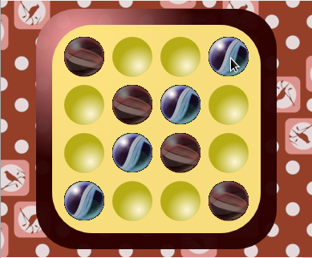
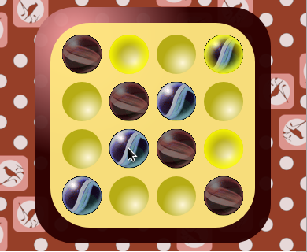
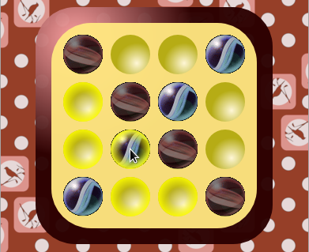

Obsługa interfejsu
Obsługa interfejsu jest prosta oraz intuicyjna. Przykładowy ruch przebiega następująco:
- Naprowadzamy kursor na pion który chcemy przesunąć:
 - Klikamy pion:

- Przesuwamy kursor w jedno z podświetlonych miejsc oznaczających możliwe przesunięcie piona:
- Klikamy myszą aby przesunąć pion:
Istnieje także możliwość zmiany wybranego piona na inny. Przykładowa zmiana przebiega następująco:
- Naprowadzamy kursor na pion który chcemy przesunąć:
- Klikamy pion:
- Zmieniamy zdanie, chcemy wybrać inny pion. Przesuwamy więc nad niego kursor:
 - Klikamy myszą aby wybrać inny pion:
